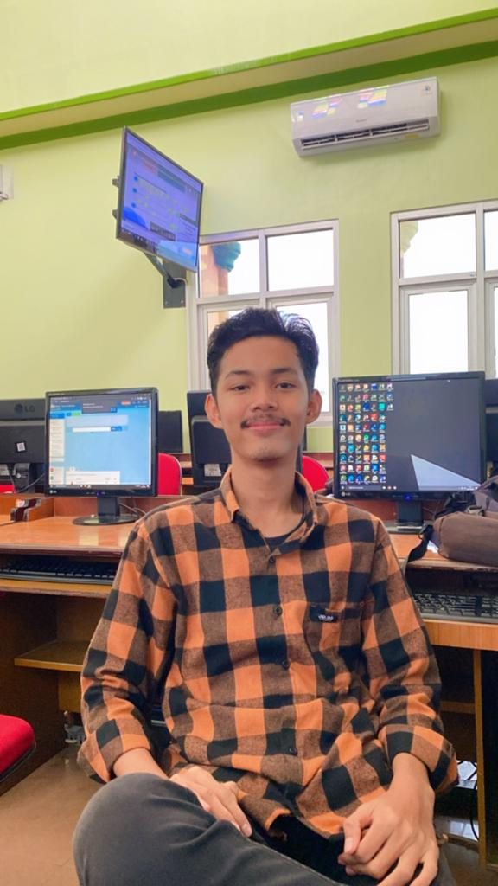

Biodata
HALLO!! Saya Rian Pebriawan, Umur saya 19Thn, Saya sangat menyukai pengalaman baru karna bagi saya pengalaman adalah pelajaran yang dapat saya gunakan untuk masa depan nantinya, Berikut merupakan Vidio Profile dari saya
| No. | Keahlian | Tingkat |
|---|---|---|
| 1 | Excel, Word dan Figma | Advanced |
| 2 | CSS, HTML, JavaScrip | Beginner |
| No. | Nama Pekerjaan | Deskripsi | Keahlian |
|---|---|---|---|
| 1 | System Analyst | Melakukan analis yang ada di perusahaan | - Menguasai Excel atau word - Memiliki pengalaman kerja sebagai system analyst - Bisa bekerja dengan teliti |
| 2 | UI/UX Designer | Merancang dan mengembangkan tampilan aplikasi web yang user-friendly. | - Menguasai desain UI/UX - Memiliki pengalaman mendesain aplikasi - Mampu bekerja dalam tim |
| No. | Jenjang Pendidikan | Nama Sekolah/Universitas | Jurusan | Tahun Lulus |
|---|---|---|---|---|
| 1 | Sekolah dasar (SD) | SD Negeri 1 Kota Alam | - | 2015 |
| 2 | Sekolah Menengah Pertama (SMP) | SMPN 3 Kotabumi | - | 2018 |
| 3 | Sekolah Menengah Atas (SMA) | SMAN 4 Kotabumi | IPA | 2021 |
| 4 | Sarjana (S1) | Universitas Teknokrat Indonesia | Informatika | - |
| No. | Nama Kegiatan | Tahun | Penyelenggara | Peran |
|---|---|---|---|---|
| 1 | Acara Perpisahan SMA | 2019 | SMA NEGERI 4 KOTABUMI | Panitia |
| 2 | Lomba Desain Poster | 2022 | Universitas Teknokrat Indonesia | Peserta |
| 3 | seminar Public Speeking | 2023 | Universitas Teknokrat Indonesia | Peserta |
| 4 | Lomba UI/UX | 2022 | Universitas Teknokrat Indonesia | Peserta |
| No. | Nama Produk | Deskripsi | Tahun |
|---|---|---|---|
| 1 | Aplikasi Sport Id | Aplikasi Pencari Lapangan | 2023 |
| 2 | E-BOOK Cerita Fiksi | Buku elektronik untuk anak-anak. | 2022 |
| 3 | Desain Poster Semangat Berbudaya DiMasa Pandemi | Desain Poster untuk membangkitkan semngat dalam berbudaya di masa pandemi | 2022 |
| 4 | Aplikasi Manajemen Proyek | Aplikasi untuk memudahkan manajemen proyek dengan fitur seperti task management dan collaboration. | 2022 |
Tentang Saya
Saya Rian Pebriawan merupakan Mahasiswa Informatika di Universitas Teknokrat Indonesia, saya memiliki pengalaman pernah membuat desain Aplikasi dengan nama aplikasi sport.id dan berkerja dalam tim dengan teman teman, saya juga sangat suka mencari pengalaman baru dalam bidang apapun contohnya dalam bidang pecinta alam dan dalam bidang organisasi karna bagi saya pengalaman itu sangatlah penting untuk hidup saya dimasa depan. semoga dengan tulisan ini bapak/ibu mampu mengenal saya lebih dekat lagi, Terimakasih.